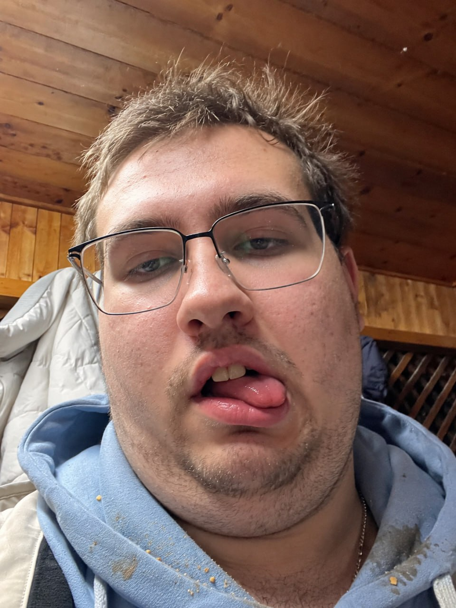

Экспедиция в общежитие длилась три дня. Учёные пришли за научным открытием, а ушли с вопросом, почему оно так смотрит.

Рис. 1. Особь в момент, когда в голове нет ни одной мысли, зато есть вопрос «а пельмени ещё остались?». Наведи на жёлтые кружки.
| Латинское название | Homo Studentus Pomytus («человек учащийся, зачем-то») |
| Ареал | Общежитие, комната с видом на другую стену общежития |
| Рацион | Энергетик, пельмени, сухарики. Овощи видел только на картинках |
| Активность | Преимущественно после 23:00. До этого не обнаружен |
| Размножение | Не наблюдалось ни разу, ведущие биологи в шоке |
| Защитный окрас | Голубая толстовка со следами обеда за прошлую неделю |
| Голос | «Я сейчас всё сдам» (рёв самца при приближении сессии) |
| Статус | НЕ ВЫМИРАЕТ, К СОЖАЛЕНИЮ |
Замеры проведены в полевых условиях, пока особь не заметила приборы.
Красным отмечены часы, когда особь «ещё немного посидит и ляжет».
Выбери маршрут и понаблюдай. Точка — наш герой, он же причина вашей головной боли.
«Открыл холодильник, забыл зачем, закрыл, открыл снова. Дважды. Это не поведение, а баг.»старший научный сотрудник, комната 412
«Выдвигаемся на экзамен? Нет. Особь открыла энергетик и считает, что подготовка идёт».староста, потерявшая надежду
«Вид не опасен для окружающих, только для собственной зачётки.»деканат